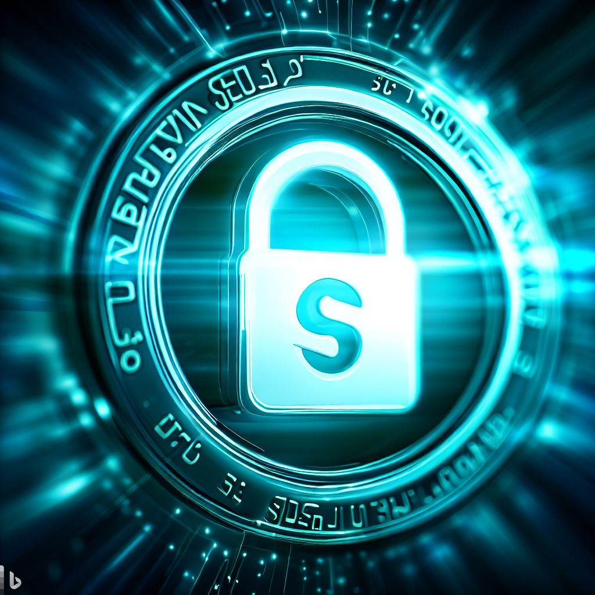

SSL es un protocolo de seguridad que ofrece privacidad, autenticación e integridad a las comunicaciones en Internet. SSL significa Secure Sockets Layer (Capa de sockets seguros), un protocolo de seguridad que crea un enlace cifrado entre un servidor web y un navegador web. SSL es la tecnología de seguridad estándar para establecer un enlace cifrado entre un servidor web y un navegador.
Burp Suite es un proxy que interfiere en las peticiones que se realizan entre un cliente y un servidor. El proxy almacena y analiza dichas peticiones y las reenvía hacia el destino original. Lo que ofrece la plataforma es la posibilidad de observar, analizar y modificar dichas peticiones
Un dominio web es el nombre único y exclusivo que se le da a una determinada página en internet. Es un vínculo por medio del cual los usuarios pueden encontrar el sitio en la web de forma más sencilla y rápida para así poder acceder al contenido. Un dominio web también es conocido como domain en inglés y es una dirección o nombre alfanumérico único que se caracteriza por ser fácil de recordar, utilizado para identificar un sitio en internet, ya sea servidor de correo electrónico o un servidor web.
Ideal para páginas pequeñas sin base de datos
Para páginas personales con base de datos
Para empresas con alto movimiento